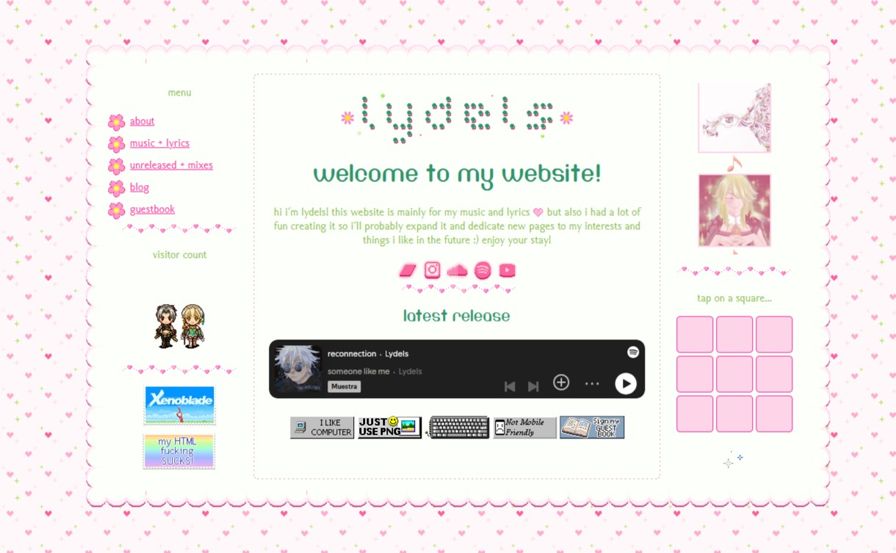
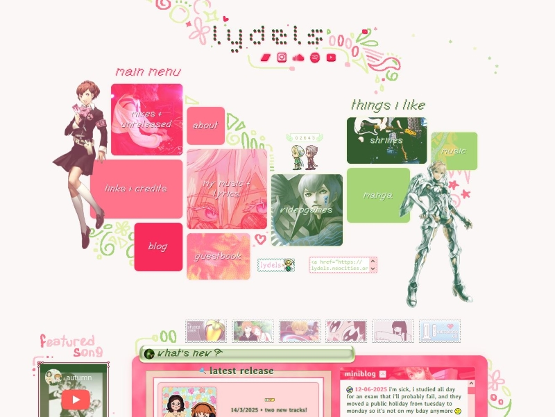
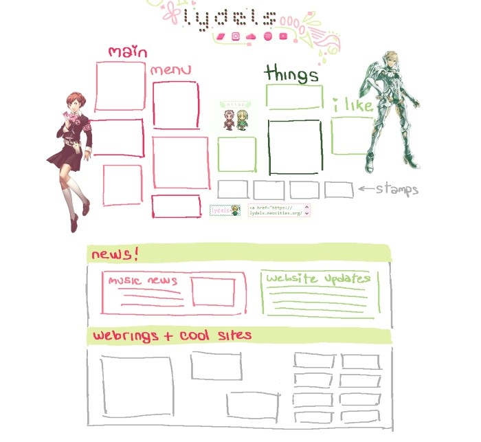
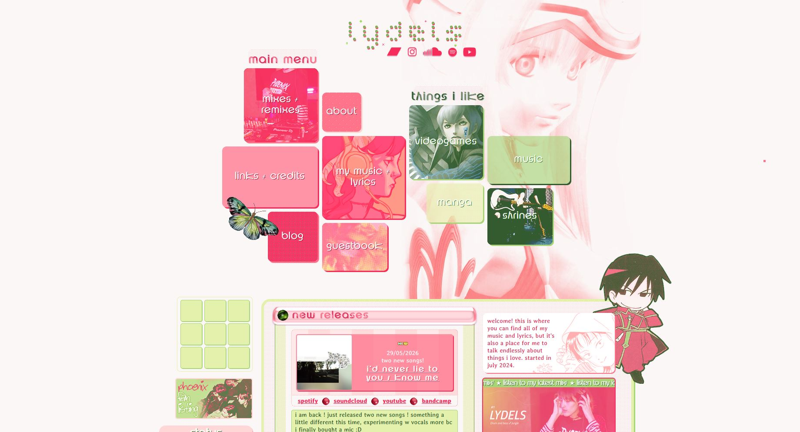
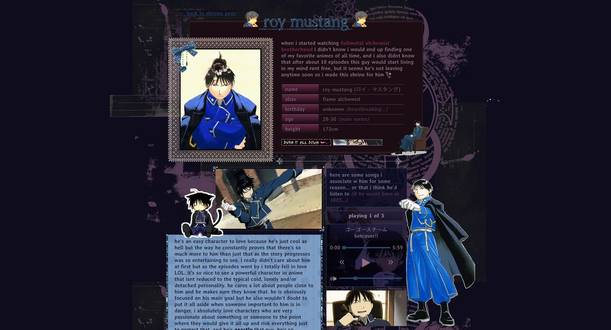

back to about page
back to about page website archive
july 2024

not knowing a thing about html or css i created a neocities account, googled a tutorial and started coding!! i did have a bit of programming experience so i didn't have too much trouble with the basics. this image on the right was the website on day 2?? or 3?? something like that... click here to see a slightly bigger version lol
i've said this in my first blog, but shoutout to malice who introduced me to neocities and the world of personal websites, and helped me out when i was just starting! this site probably wouldn't exist without them so im very thankful :3 and also, if you're reading this and don't have a website yet... this is your sign to make one!! i started mine with no real clear purpose and it ended up being one of my favorite things to do.
uhh i didnt really back up my code when i just started so that image will have to do LOL
august 2024

around august/september i had what i would call version 1 of the website! these 4 pages took a lot longer than i expected... i actually struggled a lot to properly understand web coding at the beggining since i was used to taking a completely different approach when writing code, coming from the programming side. most of the tags made no sense to me until i got the hang of it.

i also think most of this was done with the neocities code editor which is kinda crazy (i use visual studio code now... but it's been getting really annoying about ai lately so i might be switching again soon lol). i think the tic tac toe is the only thing still left intact from this LOL. i was very proud of the music page...
february 2025

i consider version 2 to be the one where i added the "things i like" section... whole new design for that part of the website. i got a bit more used to html and css at this point, which allowed me to get more creative with the design and have more freedom to make the things that i wanted to make. did it pretty fast too!
i remember i was very proud of achieving that music section with no javascript LOL. i still dont have the time / dont really want to learn javascript so i will still implement the most horrendous css-only alternatives whenever i can.

later on however, i ended up having to add some javascript in the music page even if i didn't like it... css can only do so much when it comes to menus :P special thanks to my boyfriend who helped me out with that. he is a web dev and i love showing him my atrocious code and ignoring him when he asks me to please stop using inline css.
index went through some gradual changes where i removed, added and reorganized things for a while, but the same base design remained.
march 2025

as i got better at knowing how to make my site look like i want it to, i started thinking about making a new design for the index page. below is a sketch i did when i came up with the idea! i really wanted something original and unique, so i tried to do that while also keeping the essence of my old site.

i took some inspiration from my own designs back from when i was a kid playing around with photoshop. i wouldn't say i am a graphic designer or any kind of visual artist, but graphic design was one of my first interests as a kid and maybe the first hobby i picked up, back when i was 9 or 10 years old. i went through my old deviantart page, got some ancient (2014) resources from there and incorporated them in this design. it was a really nice way of reconnecting with design and also honoring 12 year old me who kept on posting designs even when no one gave a shit LOL.
when i finished my new index i also started updating and making unique designs for each page (except for the things i like page) and i am pretty happy with how it looks right now. probably won't change it in any major way for a while.
june 2026


feels like this site has changed so much that i need to update this again lol... overall, the index is still kinda the same, but all these months i've been slightly tweaking it, changing the backgrounds and borders or little details that i didn't fully love, and i think over a year later i've finally perfected it lol. this is the design i've always wanted! i can't say the thought of making a completely new one hasn't crossed my mind though... but for now i really like it and i'm just gonna leave it like that :P i can't let go of it just yet!
in the meantime i've been experimenting with completely new layout designs, mainly for my shrines and fanlistings. now that i feel like i have enough html and css knowledge to do whatever i want, making a completely new layout from scratch is so fun...
somehow i still find things that i want to change all the time so i guess there will never be a definitive version of the site :P